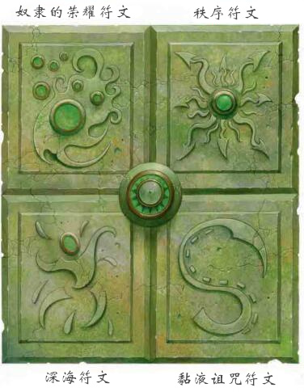

狮鹫注：Glyph一词在本文的旧译文中出现过符文、符印两种译名，在核心法术中出现过"刻纹"的译名 (守卫刻纹 Glyph Of Warding) ，此处统一为符印以和其他的符文 (Rune) 做区分。
具有"制造底栖魔鱼符印" (Craft Aboleth Glyph) 专长的底栖魔鱼可以利用他们的魔法知识来创造强大的魔法符印 (Glyphs) 。这些符印中的绝大多数都只是复制了"守卫刻文"这个法术而已。但是，具有知识和力量的底栖魔鱼会知道如何制造更强大、更有力的符印，这被称作大师符印 (Master Glyph) 。每个大师符印都是具有特定效果的唯一符印。这里详细介绍了几个大师符印的示例，可以将它们作为创造新的大师符印的参考。
任何呼吸空气的生物方法在符印20英尺范围内，必须通过强韧DC19的鉴定，以避免肺部充满水。第一轮,它的生命值下降到0,失去意识。第二轮,它的生命值下降到-1,第三轮,它死了。任何将溺水者的角色回归到正面的效果，都能唤醒这个生物，并使其吐出在肺部中的水。否则,DC15医疗鉴定可以清空的生物肺部的水，并将其从溺水状态中拯救出来。
强烈咒法；CL15；制造底栖魔鱼符印，操控水位；价格 120，000 gp。
符印20英尺范围内，所有非底栖魔鱼类生物在力量，敏捷，体质上获得-6的罚值。离开符印效果范围内后，持续1D4轮。意志鉴定DC16，通过则无效。
中等死灵；CL9；制造底栖魔鱼符印，降咒；价格 72,000 gp。
任何在符印20英尺范围内的底栖魔鱼的奴役范围加倍。
中等变化；CL9；制造底栖魔鱼符印，鹰之威仪；价格 20,000 gp。
符印30英尺范围内，所有非守序生物在攻击骰，伤害骰和豁免上获得-1的罚值。
中等防护；CL9；制造底栖魔鱼符印，反秩序法阵；价格 30,000 gp。
在符印30尺范围内的奴隶会对他们的主人感到骄傲和忠诚。这些生物在力量、体质和意志豁免上获得+2士气加值。如果一个奴隶在符印范围内攻击另一个，那么他会受到10D6力场伤害 (反射DC16伤害减半) 然后立刻失去符印效果，直到他离开并重新进入符印范围。
中等变化；CL9；制造底栖魔鱼符印，狂暴术；价格 40,000 gp。
在符印30英尺范围内，对抗黏液变形的能力豁免-4。豁免失败则1轮后开始变形。
中等变化；CL9；制造底栖魔鱼符印，价格 25,000 gp。